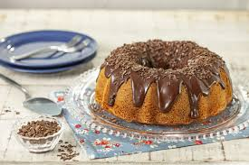

<!DOCTYPE html>
<html lang="pt-br">
<head>
    <meta charset="UTF-8">
    <meta name="viewport" content="width=device-width, initial-scale=1.0">
    <title>Bolo de Cenoura</title>
</head>
<body style="background-color: rgb(255, 200, 49);"></body>
    <a href="./../index.html">Voltar para o menu</a>
<body>

<section>
    <h1>Bolo de cenoura</h1>
    <h3><B>INGREDIENTES</B></h3>
    <h4>Massa</h4>
    <ul>
        <li>1/2 xícara de aóleo</li>
        <li>3 cenouras médias raladas</li>
        <li>4 ovos</li>
        <li>2 e 1/2 xícaras de farinha de trigo</li>
        <li>2 xícaras de açúcar</li>
        <li>1 colher de fermento em pó</li>
    </ul>
    <h4>Cobertura</h4>
    <ul>
        <li>1 xícara de leite</li>
        <li>3 colheres de chocolate em pó</li>
        <li>1 colher de manteiga</li>
        <li>1 xícara de açúcar</li>
    </ul>
    </section>
    <section>
    <h4>MODO DE PREPARO: <br> Massa</h4>
    <ol>
        <li>Em um liquidificador, adicione a cenoura, os ovos e o óleo, depois misture.</li>
        <li>Acrescente o açúcar e bata novamente por 5 minutos.</li>
        <li>Em uma tigela ou na batedeira, adicione a farinha de trigo e depois misture novamente.</li>
        <li>Acrescente o fermento e misture lentamente com uma colher.</li>
        <li>Asse em forno pré-aquecido a 180 graus por aproximadamente 40 minutos.</li>
        </ol>
    <h4>Cobertura</h4>
    <ol>
        <li>Despeje em uma tigela a manteiga, o chocolate em pó, o açúcar e o leite, depois misture.</li>
        <li>Leve a mistura ao fogo e continue misturando até obter uma consistência cremosa, depois despeje a calda por cima do bolo.</li>
        <li>Acrescente o fermento e misture lentamente com uma colher.</li>
    </ol>
    </section>
    
    <footer>
        <p>Autora: Kelly Santana</p>
    </footer>
    
</html>